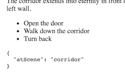

Components 102
Much wants moreSections in this chapter
Gamebook - state
storing position
Before we get started on advanced component API:s, let's do a little exercise prelude!
As before;
- copy the folder of the previous version,
- paste it right next to that version, and
- give it the name
FF03-state.
So! The plan is to introduce gameState to our model, which should store the progress the player makes.
Here's the plan:
- aDesign the shape of the
GameStatedata - bAdd a
startStateprop to theadventuredata - cAdd a
gameStateprop to the component - dTurn
sceneinto a computed property
We begin by figuring out what the state of a game session looks like.
It really only needs to track one single thing, namely the key of the current page!
But as the future might bring more stuff, let's put that into an object so we can add more things later!
So our state looks something like this:
{
atScene: 'corridor'
}
If you're following along with the TypeScript stuff we should of course create an interface for this object, called GameState or something similar.
It makes sense for the starting state to be part of the adventure data.
After all, only the author of the adventure knows which page to start at (and how much gold to begin with, etc).
Therefore, add a new startState prop to adventure in data.ts, containing an initial game state object with atScene pointing to the first page of the adventure.
Of course we only have one page right now, so use that as starting page!
If you have an Adventure interface that must now be updated to allow a startState prop of type GameState.
Now, add a gameState property (or another name of your choosing) to our component class in app.ts, and initialise it to the start state according to the adventure.
gameState = this.adventure.startState;
Finally, let's turn our attention to the scene prop.
Right now we manually point it to the scene object inside the adventure:
scene = this.adenture.scenes['corridor'];
But this doesn't make sense anymore, since the current scene can be computed by looking at gameState and adventure!
We might even risk introducing out-of-sync bugs if gameState and scene don't agree!
We should therefore turn scene into a computed property.
Make scene a getter by using the get keyword and turning it into a method, which returns the correct scene by reading from gameState and adventure.
For an example how that is done, see the Computed Property demo.
Now our small refactoring is done! Rebuild, and if it all fits together it will again work just like before.
Catching View events
What's up?
Now we take a look at the other half of the cycle!
Here is a super simple event catching example:
@Component({
selector: 'app',
template: `
<button on-click="flag = !flag">Toggle!</button>
<p>Flag? {{flag}}</p>
`
})
export class AppComponent {
flag = false
}
Take a closer look at the event handler:
<button on-click="flag = !flag">Toggle!</button>
The on-click attribute will be executed as code when the event happens.
Note that on-click is not a native DOM event handler. That would have been called onclick.
But we really shouldn't mutate values in the view so let us call a method instead:
@Component({
selector: 'app',
template: `
<button on-click="toggle()">Toggle!</button>
<p>Flag? {{flag}}</p>
`
})
export class AppComponent {
flag = false
toggle() {
this.flag = !this.flag;
}
}
Remember that we are not attaching a function but writing code that will run when the event happens. So don't write this...
<button on-click="toggle">Toggle!</button>
...since you likely mean this:
<button on-click="toggle()">Toggle!</button>
Similar to how [attr] is a shortcut for bind-attr, we can use (event) instead of on-event:
<button (click)="toggle()">Toggle!</button>
In case we are interested in event data, like if we catch a keyup event from an input element, Angular automatically creates an $event variable containing the DOM event object:
@Component({
selector: 'app',
template: `
<input (keyup)="myName = $event.target.value">
<p>Who am I? {{myName}}</p>
`
})
export class AppComponent {
myName: string
}
See this in the Catch event variable demo
As noted before we prefer to have value mutations in the model, so we should pass the event to the model instead:
<input (keyup)="setName($event.target.value)">
<p>Who am I? {{myName}}</p>
class AppComponent {
myName: string
setName(txt) {
this.myName = txt;
}
}
Much like the template expressions are sort of JavaScript, so are the template statements that we use as event handlers. Most importantly, they also can only reach values and methods on the model.
There are more details in the Template statement sections of the official docs.
Lifecycle hooks
the lifespan milestones
We won't be using them in our project or go into too much detail, but we'd be amiss if we didn't mention the lifecycle hooks.
These are magical method names that will be invoked at certain points in the lifecycle of a directive.
For example, ngOnInit is called after the first render, and ngOnDestroy when it leaves the DOM.
You can see the full list of methods in the official docs, together with a demo component that shows off them all.
Politics
let's talk about the elephant
Let's zoom out for a while and discuss what we've just learned. All of those directives can be called a DSL for templating, and most templating solutions have corresponding solutions.
The reason is simple - we're working in HTML which isn't a logical language, but since we need logic in our template we have to add it somehow.
This is in stark contrast to React, which expresses the templates in JavaScript. If you need a loop in a React component, you'll use a regular JavaScript loop:
var Chores = function(props){
var renderedChores = props.chores.map(function(chore,n){
return <li key={n}>{chore}</li>;
});
return (
<div>
<h4>My chores:</h4>
<ul>{renderedChores}</ul>
</div>
);
}
But! Since we need to output HTML in the end, React instead has a DSL for expressing nested data in JS, namely the weird xml syntax you saw inside the return statement.
return (
<div>
<h4>My chores:</h4>
<ul>{renderedChores}</ul>
</div>
);
Because here's the foundational problem - we...
- express UI:s as nested data
- perform logic to define the UI
...so we need both logic and nested data at the same time.
It all boils down to this:
Debugging Angular apps
bug hunting tools & tricks
When debugging Angular apps, regular JS debugging tricks still apply to a large extent.
And the king of those is; make sure that you know the browser dev tools!
We'll walk through three tips for debugging Angular apps:
- aAugury
- bBound JSON output
- cLogger services
Angular Augury is a Chrome dev tools extension for Angular debugging, serving much the same purpose as Ng-Inspector and Batarang for AngularJS.
Here's an in-action screenshot of what Augury looks like:

As you can see, Augury shows us
- The component tree
- Component state
It also gives us powerful tooling around dependency graphs and route overviews.
For components with Outputs, Augury let's you trigger outputs for easy experimenting:

Augury also has a bunch of other features that makes it well worth getting to know.
Of course, given the fickle nature of Angular, Augury is in heavy development.
Also, note that Augury requires a web server to function! It won't work over the file:// protocol.
Now for a neat trick to debug component state!
Take our gamebook project for example, which now has gameState:
gameState: GameState = {
atScene: this.adventure.startsAt
}
Imagine how later on it will become much more complex:
gameState: GameState = {
atScene: this.adventure.startsAt,
gold: 5,
inventory: ['sword', 'shield'],
hp: 12,
xp: 3
}
It is quite common for apps to be driven by a central state like this, and for that state to change frequently.
Debugging will then often mean to check the contents of that state. How do we easily do that?
A naïve way to debug this would be to sprinkle...
console.log(this.gameState);
...in various places. This works ok, but quickly becomes cumbersome.
Now for the trick: by adding this line to the template:
<pre>{{gameState | json}}</pre>
...we get a see the state live directly in the view!

Try this out in the JSON debug demo!
AngularJS developers will recognise this, as the exact same thing was possible in AngularJS!
While debugging an app, you inevitably start sprinkling console.log calls here and there.
And, equally inevitably, forget to remove some of them before production...
To mitigate that, and to allow for more powerful logging features, it is common practice to instead use a Logger service.
In its simplest form this just implements a log method:
export class Logger {
log(msg: any) { console.log(msg); }
}
You would then inject this into your component or whatnot...
constructor(private logger: Logger){}
...and use the logging where needed:
someComplexMethod(){
let result = /* complex calculation */
this.logger.log(result)
}
Using a Loggerservice in this way means that you...
- can ship a "mute"
Loggerin production instead of removing log statements - hook in other functionality such as writing logs to files, etc
Gamebook - page turning
Actual interaction
As before;
- copy the folder of the previous version,
- paste it right next to that version, and
- give it the name
FF04-interaction.
The time has finally come to implement page turning! Here's the plan;
- aAdd more scenes to the
adventuredata - bTurn the option data into objects with links
- cMake option clicking update game state
To turn between pages we need more than one page, so add a few more to the adventure in the data.ts file!
const adventure = {
title: 'A strange adventure',
startState: {atScene: 'house'},
scenes: {
house: { ... },
road: { ... },
ambush: { ... },
...
}
}
We must also turn the option strings into objects, since they need to contain both
- the text to show
- which scene to move to
So for each link, turn them into objects and add the key to the target scene!
Again, if you're using TypeScript interfaces you must update those.
To avoid the Scene interface growing too complex you could add a new Option interface, and adapt Scene to use that for the options!
Finally the time has come to make the options clickable!
- add a
changeScenemethod to the component that expects an option object and updatesgameStateaccordingly - use that method as clickhandler for options with
(click). If you are typescripting, the clickhandler parameter type should be anOption!
Since we've already wired scene to read from gameState in the previous exercise, we're all done! Reward yourself by trying out your fully playable adventure.
Although a humble beginning, you now have all the needed parts to make a full game book!
...ignoring the likely wishes for more functionality such as health points, inventory etc...
Now that we have state that we manipulate, don't forget to use the debug tactics you've learned about!
Challenge: If you sailed through all of that, how about implementing an automatic reset for game-ending scenes with no options?
And parhaps also adding some dramatic background-color to the end-game scenes while we're at it?
How would we go about all this? Well, we need to show a restart link when the scene has no options.
For our model, this means we can:
- add a
gameOvergetter that returnstrueif there are no options in the scene - add a
resetGamemethod that setsgameStatetostartStatefromadventure
And in our view:
- add a reset option
<li>that- only show if
gameOveris true - calls
resetGamewhen clicked
- only show if
- wrap the whole template in a
div - add a dynamic
deadclass to thedivusing[class.dead]="gameOver" - add a style for the
.deadclass
If you've followed along, it is very likely that you now have a bug where nothing happens when we click reset. What is going on?!
Here's a clue: use the <pre> debug trick to show adventure.startState on the screen. That object should of course never change, but, does it, perhaps? Why, and how do we prevent it?
Eventually we probably also want to have dead ends that doesn't mean that the player died but that he finished the adventure successfully. How would we distinguish between wins and losses?
We leave that as a challenge challenge for you to ponder after the course! :)